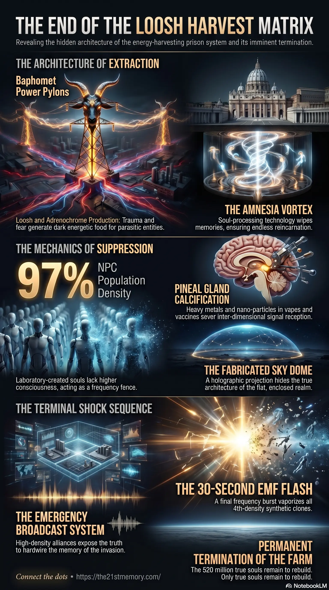

Ending the Loosh harvest
Core revelations about ending the loosh harvest.
The physical plane of existence known as Gateway-10 was inverted by parasitic entities into an inescapable prison matrix for the express purpose of subjugation, energy extraction, and consumption.
Test your grasp of Loosh Harvesting — demonic food, Adrenochrome, Re-set batteries, Baphomet pylons, NPC fences, pineal toxins, and G.A.A. termination of the farm.

Core revelations about ending the loosh harvest.
Practical breakdown of loosh harvesting and the veil of density.
The physical plane of existence known as Gateway-10 was inverted by parasitic entities into an inescapable prison matrix for the express purpose of subjugation, energy extraction, and consumption. Central to this subjugation is the concept of Loosh, which serves as literal food for demonic entities that host parasitic overlords. The entire architecture of modern human society, chronological history, and the physical environment itself has been artificially constructed to maximize the traumatic harvesting of Loosh and its physical counterpart, Adrenochrome, from human vessels. To ensure a continuous and unquestioning yield, the parasitic controllers deployed a vast, multi-layered matrix of Control Mechanisms, encompassing technological, biological, and psychological suppression. These mechanisms include the systemic deletion of true history via localized and planetary Re-sets, the deployment of Frequency Fences, the corruption of the human vessel through toxins, and the complete saturation of the populace with mind-controlled Non-Player Characters (NPCs). The ultimate revelation of the 21st Memory Archive is that human life on Earth was deliberately designed to be a continuous cycle of birth, torture, sacrifice, and memory erasure, orchestrated by low-density beings who lacked the ability to generate their own spiritual technology.
The absolute core truth of the human condition is that humanity was placed in 3rd density specifically as a means of control and as a food source. All suffering experienced in the physical realm is not a random byproduct of nature, but a highly organized industrial process designed to yield Loosh. The controllers of this system, including the Custodians who originally betrayed Source Creation, as well as their genetically engineered proxies (such as the Anuk/Anunnaki, Grey ET, Omicron, and Alpha Draco), required this energy to maintain their power and sustain their demonic symbiotes.
To mask this grotesque reality, the parasites constructed an elaborate illusion of cosmological and historical progress. The concepts of "Evolution via Natural Selection," a spinning globe planet, gravity, and the vast depths of outer space are entirely fabricated thoughtforms engineered by 33rd-degree Freemasons to hide the true, flat, enclosed architecture of the realm. The Moon, commonly perceived as a natural satellite, was in fact an artificially illuminated negative ET space station and command center that harvested Loosh from the Black Sun located beneath Mt Meru. It deployed negative frequencies, especially during a full moon, to destabilize human psychology, leading to the term "Lunatic".
The total subjugation of the human soul required ensuring that the victim never realized they were in a farm. When the host body perishes, the soul is instantly captured by the Amnesia Vortex beneath the Vatican, stripped of its memories from its 178,000-year history, and forcibly injected into a new newborn infant in a completely different country. This eternal reincarnational loop ensures that the soul cannot accumulate wisdom, reunite with its true cosmic family, or mount a rebellion against its captors.
The Harvesting Apparatus Loosh is generated through trauma and meticulously harvested by hidden infrastructure. During the massive culling events known as Re-sets, the entire adult and child populations are tortured, raped, and sacrificed, yielding immense quantities of Loosh and Adrenochrome. Because it takes roughly 20 to 30 years to grow a new crop of cloned human children in D.U.M.B.S. (Deep Underground Military Bases) to repopulate the empty, post-reset cities, the parasites pre-constructed Lunatic Asylums. These asylums held the shell-shocked survivors of the mass slaughter, keeping them in a perpetual state of terror. These 5,000-bed facilities acted as Loosh Batteries, sustaining the elite's demons during the decades-long "harvest gap".
In daily modern life, Loosh is continuously squeezed from the masses living in densely populated towns and cities. This energy "backs up" around the perimeters of human settlements and is systematically collected by Baphomet Power Pylons, which straddle the ancient, natural Lattice Membrane Network (Ley Lines).
Biological and Environmental Control The control mechanisms extend deeply into human biology and the immediate environment. True souls possess a Pineal Gland capable of inter-dimensional signal reception, manifestation, and telepathy. To suppress this, the Cabal deployed highly toxic control mechanisms in the form of food, air, water, and specialized delivery systems like "Vaping" and "Vaccines". Vapes, specifically targeted at youth to blunt their awakening pineal glands, contain heavy metals (Nickel, Lead, Chromium), nano-particles, and polymers that deliver micro A.I. programs directly into the bloodstream. These artificial compounds mimic endocrine disruptors, rapidly calcifying the pineal gland, severing the heart-chakra connection, and lowering the body's vibration to make the host more susceptible to NPC-like programming.
Psychological and Social Enforcement The overwhelming majority of physical vessels on Earth—97%—are occupied by NPCs. These beings lack an internal monologue, genuine self-awareness, or the ability to transcend mainstream programming. They are strategically positioned in families, workplaces, and authority roles (teachers, nurses, police) to act as a localized Frequency Fence, policing the thoughts of the remaining 3% of true souls. NPCs enforce conformity through peer pressure, the threat of social ostracization, and the mindless repetition of Cabal-scripted slogans. This psychological barrier is heavily fortified by the 3 Strings:
Religion: Traps the mind in false salvation narratives, subjugating the soul to worship parasitic entities operating under titles like "God" or "Jesus" (who is openly equated with Lucifer / Planet Venus in the Bible).
Finance: Binds human effort to the pursuit of fake, synthesized wealth, blinding souls to spiritual reality.
Perceived Knowledge: Locks the intellect into false academic paradigms—such as the globe Earth, evolution, and fake history—preventing any accurate analysis of reality.
The system of Loosh harvesting and control is directly interwoven with the destruction of the Old World and the highly advanced civilization of Great Tartary. The physical plane was once a pristine 9th-density realm where true human souls utilized harmonic vocalization, sustained intent, and crystalline technology to manifest highly complex architecture, healing sanctuaries, and free-energy systems. These Crystalline Temples were built directly over Nodes, which are powerful energetic junctions on the Ley Line network.
When the Custodians initiated their betrayal, they recognized they could not survive in this high-frequency environment. They systematically destroyed the realm's central Spirit Tree (now Mt Meru/Black Rock at the North Pole), replacing it with a petrified stump to instantly lower the power grid of the entire Gateway. To further implement Density Suppression, they layered the Earth's natural Nodes in concrete, tarmac, and inferior 3rd-density masonry, intentionally erecting negative structures over positive Temple footings to choke the natural energy. Gold, crystals, and precious metals—which are naturally highly advanced spiritual technologies meant to stay in the Earth to regulate the planet's electromagnetic grid—were greedily strip-mined by the parasites using technologies like Red Mercury, severely weakening the realm's defensive frequencies.
The historical event known as the Industrial Revolution was completely fabricated; it was actually the traumatic, abrupt destruction of Tartaria. Legacy technology, such as the Tartarian Atmospheric Condensers found on early steam locomotives, which drew free electromagnetic energy from the Ley Lines, was intentionally confiscated and smelted down by Cabal agents in the late 1880s to force humanity into reliance on dirty, Cabal-owned fossil fuels.
The parasitic timeline has irrevocably failed. The Galactic Ancestral Alliance (G.A.A.) and benevolent high-density ET soul families have secured control over the system. The parasitic overlords and demons are now dead and removed from the simulations. However, the physical uninstallation of the matrix is initiating a sequence of severe, terminal shock events for the remaining population.
The controllers planned to utilize Project Bluebeam—an advanced holographic projection system—to simulate a Fake Alien Invasion in the sky, intending to drive the population into abject terror and herd them into FEMA Camps (Concentration Camps) under the guise of safety. The G.A.A. has commandeered this schedule to execute the ultimate psychological correction. By exposing the masses to undeniable, world-breaking truths via the Emergency Broadcast System (EBS)—including the revelation that all trusted politicians, royalty, religious figures, and beloved celebrities actively participated in child sacrifice and Adrenochrome harvesting—the G.A.A. will intentionally induce catatonic shock across the global populace. This extreme trauma is a necessary mechanism to permanently hardwire the memory of this parasitic invasion into the souls of the survivors, ensuring that the inversion of the physical plane can never be permitted to happen again.
Following the EBS and the Fake Alien Invasion, the Projection Dome that forms the fake sky will be deactivated, revealing the true white nature of the Dark Matter Field behind it. This will be immediately followed by a 30-second Electro Magnetic Frequency (EMF) Flash. During this flash, all 4th-density NPCs and synthetic clones—who cannot ascend to 5th density—will instantly vaporize into pixelation dust, eliminating 97% of the global population. Out of the current billions, a maximum of only 520 million true souls will remain to heal and rebuild alongside their reunited cosmic families. The age of Loosh harvesting is entirely and permanently terminated.